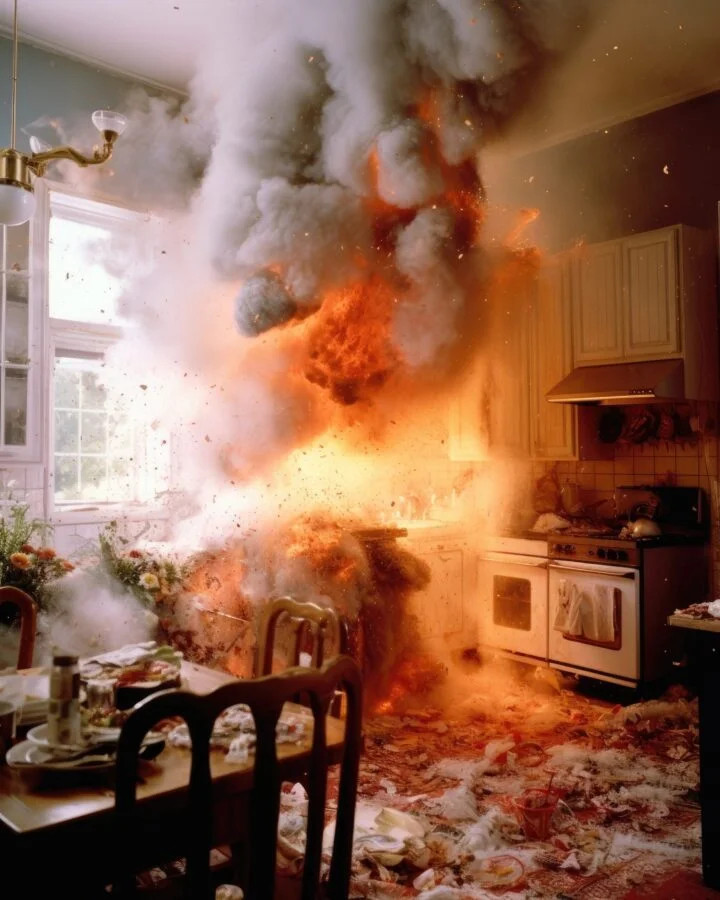

La limpieza después de un incendio es una tarea compleja y delicada que requiere de medidas adecuadas para garantizar la seguridad y eliminar los rastros dejados por el fuego. Tanto en el entorno laboral como en el hogar, es fundamental saber cómo limpiar y prevenir incendios para evitar situaciones desastrosas. En este artículo, te daremos consejos y técnicas para llevar a cabo una limpieza eficiente y te brindaremos información relevante sobre la prevención de incendios.
Cuando se produce un incendio, es esencial tomar las precauciones necesarias para garantizar la seguridad de las personas y minimizar los daños. Una vez que el fuego haya sido controlado y se haya garantizado la seguridad, es importante proceder con la limpieza adecuada. A continuación, se presentan algunos consejos para limpiar después de un incendio:

1. Evalúa los daños:
Antes de comenzar la limpieza, es importante evaluar los daños causados por el incendio. Esto te ayudará a determinar qué medidas tomar y qué elementos necesitarás para la limpieza.
2. Equipamiento de protección personal (EPP):
Antes de comenzar a limpiar, asegúrate de contar con el equipo de protección personal necesario, como guantes, mascarilla y gafas de seguridad. Esto te protegerá de cualquier sustancia peligrosa que pueda estar presente debido al fuego.
3. Ventilación:
Antes de comenzar la limpieza de incendios, asegúrate de ventilar adecuadamente el área afectada. Abre puertas y ventanas para permitir que el aire circule y elimine los olores persistentes.
4. Limpieza de superficies:
Utiliza productos adecuados para limpiar las superficies afectadas por el fuego. Evita utilizar agua en exceso, ya que puede propagar residuos y dañar aún más las superficies. Consulta con profesionales o empresas especializadas en limpieza después de incendios para obtener orientación y productos adecuados.
5. Limpieza de objetos:
Los objetos afectados por el fuego pueden requerir una limpieza especializada. Si tienes dudas sobre cómo limpiar equipos electrónicos, muebles u otros objetos dañados, es recomendable consultar a expertos en limpieza.
Más allá de la limpieza de incendios, es fundamental tomar medidas de prevención para evitar que estos ocurran. Aquí hay algunos consejos para prevenir incendios en el trabajo y en el hogar:
1. Mantén una correcta instalación eléctrica:
Revisa y mantén regularmente tu instalación eléctrica. Evita sobrecargar los enchufes y asegúrate de que no hay cables pelados o sueltos. En el trabajo, asegúrate de cumplir con las normas de seguridad eléctrica.
2. Almacenamiento seguro:
Si trabajas con sustancias inflamables, asegúrate de almacenarlas adecuadamente en contenedores seguros, como los IBC. Estos recipientes están diseñados para almacenar líquidos y productos químicos de manera segura.
3. Educación y formación:
En el trabajo y en el hogar, es importante educarse y estar capacitado en medidas de prevención de incendios. Aprende a usar extintores de incendios y conoce las rutas de evacuación en caso de emergencia.
4. Comparar limpia fondos:
Si tienes una piscina, asegúrate de mantener el limpia fondos en buen estado y funcionando correctamente. Esto ayudará a prevenir incendios causados por cortocircuitos eléctricos en los sistemas de limpieza de piscinas.
5. Inspecciones regulares:
Realiza inspecciones regulares en tu hogar o lugar de trabajo para detectar posibles riesgos de incendio. Verifica el estado de las conexiones eléctricas, detectores de humo y sistemas de extinción de incendios.
En conclusión, saber cómo limpiar y prevenir incendios es esencial para garantizar la seguridad y proteger tanto nuestro lugar de trabajo como nuestro hogar. La limpieza después de un incendio debe realizarse de manera adecuada, tomando las medidas necesarias para garantizar la seguridad de las personas. Recuerda siempre contar con profesionales especializados en limpieza después de incendios y seguir las medidas de prevención recomendadas para evitar tragedias.